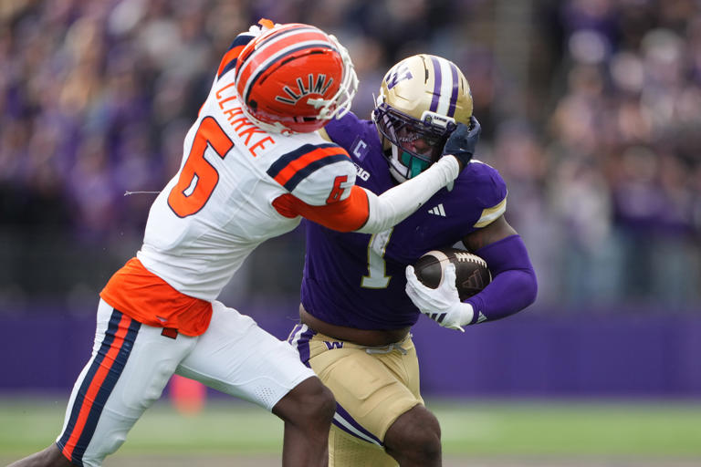
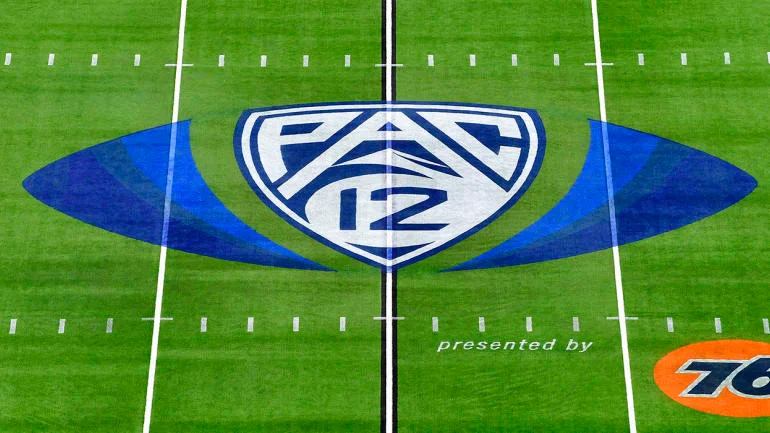
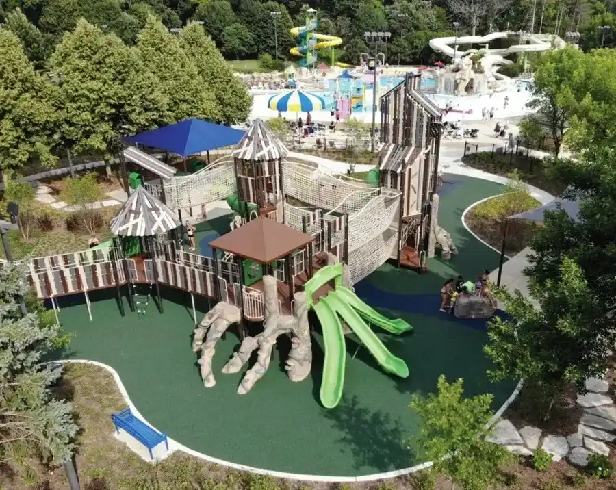

The Big Ten gets former Pac-12 powerhouses Oregon, USC, Washington, and UCLA to join them.



When the Big Ten added former Pac-12 teams Oregon, Washington, UCLA, and Southern California last year, a lot of experts thought they would have a hard time getting used to the grind-style football that is mostly run-oriented and has fewer offensive touches.
But after one season, it looks like the change is going better than expected. Andrew Destin, a writer for AP Sports, says that the former Pac-12 schools are not only surviving, but they are also growing. Oregon leads the conference with 6.4 yards per rush and 239.7 running yards per game. USC is in fourth place with 200.2 rushing yards per game.Washington and UCLA are both comfortably in the middle of the pack. These results show how well USC has adapted to the Big Ten's more physical style of play.
The changes go beyond just the numbers. Former Pac-12 coach Jedd Fisch says that his team would run about 76 plays per game at Pac-12 speed, which is about 64.7 fewer plays per game than the Huskies did the year before.Fisch said, "The Big Ten is definitely a different league when it comes to how many plays are run."
Washington still uses dual-threat quarterback Demond Williams Jr., who set a school record in October by throwing for 400 yards and rushing for 100 yards in one game, even though the pace is slower.

Pac-12 Transfers Fuel Big Ten Running Game Resurgence
The Big Ten's ground game has changed because of the addition of former Pac-12 athleticism. Seven of the top 20 rushers in the conference right now are from Oregon, USC, Washington, or UCLA. Waymond Jordan and King Miller from USC and Noah Whittington and Jordan Davison from Oregon are two of them.
Oregon is seventh in the conference with 37.7 rushing attempts per game, while USC and Washington are ninth and eleventh, respectively.
Analysts say that these signs show that the former Pac-12 schools are not just joining the Big Ten; they are also changing.
The quarterback's play has also gotten better. Dante Moore of Oregon, Jayden Maiava of USC, and Williams of Washington are all in the top six in terms of passer rating. They are all former Pac-12 quarterbacks who are now in the Big Ten. Fernando Mendoza of Indiana, who transferred from Cal, has the second-highest passer rating in the league (1708.6), behind only Julian Sayin of Ohio State (192.6).
Fisch said, "He keeps getting ready like no one I've ever seen." He praised Mendoza's work ethic. He is getting better and better.
Oregon's rise as a College Football Playoff contender with only a few weeks left in the regular season shows how quickly the former Pac-12 schools have changed their style of play to fit in with the Big Ten.

Koepka’s Leap of Faith: What Comes Next After LIV Golf Exit
DECEMBER 24, 2025

Skenes and Skubal Win Cy Young Awards as Future Uncertainty Grows
NOVEMBER 12, 2025


Local News

Seattle and Tacoma Celebrate Holiday Cheer with Winterfest and Lights Events
Seattle Winterfest and Tacoma’s Lights bring festive cheer with ice skating, holiday concerts, and dazzling light displays to celebrate the season.
LOCAL NEWS BY DECEMBER 25, 2025

New Public Park Opens on Chicago’s West Side
Chicago city officials opened a new 12-acre community park featuring walking trails, playgrounds, and green space for local families.
LOCAL NEWS BY NOVEMBER 9, 2025
Los Angeles Schools Add After-School Tutoring to Boost Reading Levels
LAUSD expanded after-school tutoring programs to support students struggling with reading and math.
LOCAL NEWS BY NOVEMBER 8, 2025